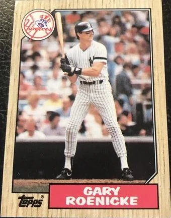
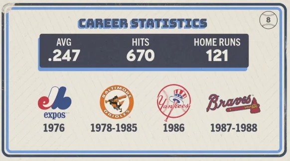

Gary Roenicke
Career Highlights & Facts
(Facts are AI-generated and may require verification)
- Member of the 1983 World Series champion Baltimore Orioles.
- Uncle of former Major League Baseball players Josh and Cody Roenicke.
- Recorded a career-high 25 home runs during the 1979 season.
Would you like to find out more about Gary Roenicke?
Career Totals
| WAR | AB | H | HR | BA | R | RBI | SB | OBP | SLG | OPS | OPS+ |
|---|---|---|---|---|---|---|---|---|---|---|---|
| 15.4 | 2708 | 670 | 121 | .247 | 367 | 410 | 16 | .351 | .434 | .785 | 117 |
Statistics via Baseball-Reference.com
The Original Clue
